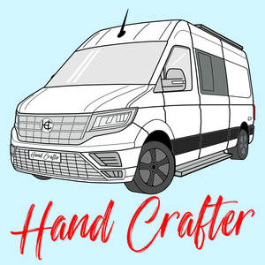

Trade Mark Journal No.2025/009 28 February 2025
UK00004161298 17 February 2025 (16,20,21,24,25,26)

- Class 16
- Stickers; Bumper stickers; Adhesive stickers; Stickers [stationery]; Car stickers; Decorative stickers for helmets; Decorative stickers for cars; Vehicle bumper stickers; Decals; Adhesive printed labels; Adhesive labels; Transfers; Iron-on transfers.
- Class 20
- Labels of plastic; Printed vinyl signs; Sew-on tags of plastic for clothing; Magnetic printed vinyl signs; Sew-on tags of plastic or rubber for clothing; Plastic name badges.
- Class 21
- Cup holders; Cup lids; Coffee cups; Cups and mugs; Tea cups; Cups; Insulating sleeve holder for beverage cups; Liqueur cups; Sippy cups; Plastic cups; Glass cups; Biodegradable cups; Compostable cups; Coffee mugs; Drinking cups; Fruit cups; Cups (Fruit -); Egg cups; Cups (Egg -); Cardboard cups; Cups made of china; Cups made of earthenware; Foam drink holders; Reusable plastic water bottles sold empty; Plastic egg holders for domestic use; Reusable stainless steel water bottles sold empty; Neoprene zippered bottle holders; Insulating sleeve holders for beverage cans; Cups of paper or plastic; Demitasse sets comprised of cups and saucers; Feeding cups; Sake cups; Silicone baking cups; Paper cups; Coffee scoops; Portable beverage container holders; Inflatable drink holders; Sports bottles sold empty; Beer mugs; Insulated containers for beverage cans, for domestic use; Insulated mugs; Mugs made of plastic; Drinking cups [not of precious metal]; Juice box holders made of plastic; Mixing cups; Egg cups, not of precious metal; Drinking mugs made of porcelain; Plastic juice box holders; Cups made of pottery; Cupcake baking cups; Egg cups of precious metal; Wine drip collars specially adapted for use around the top of wine bottles to stop drips; Mugs; Glass mugs; Wine glasses; Drinking glasses; Pint glasses; Margarita glasses; Cocktail glasses; Pilsner glasses; Schnapps glasses; Beer glasses; Whisky glasses; Tumblers for use as drinking glasses; Shot glasses; Pilsner drinking glasses; Cordial glasses; Glasses [receptacles]; Glasses [drinking vessels]; Preserve glasses; Glasses, drinking vessels and barware; Cloths for wiping glasses; Cloths for eye-glasses; Glass decanters; Glass carafes; Glass bottles; Drinking glass holders; Cloths for wiping eyeglasses; Ceramic mugs; Earthenware mugs; Porcelain mugs; Mugs of porcelain; China mugs; Mugs of china; Travel mugs; Mug cosies; Mugs made of earthenware; Mugs made of porcelain; Mug racks; Mugs made of china; Vacuum mugs; Mug sleeves; Mugs made of ceramic materials; Mugs of precious metal; Mug trees; Drinkware; Coffee pots; Coasters (tableware); Porcelain coasters; Mugs, not of precious metal; Pint tankards; Tumblers; Holders for tumblers; Goblets; Insulated bottles [flasks]; Tumblers [drinking vessels]; Trivets [table utensils]; Beer jugs; Glass bowls; Bowls (Glass -); Insulated lids for plates and dishes; Glassware; Beverage glassware; Glass flasks [containers]; Tableware of porcelain; Glass tableware; Glass flasks; Coffee services [tableware]; Coffee services of ceramic; Tableware, cookware and containers.
- Class 24
- Labels of textile for identifying clothing; Labels (Textile -) for identifying clothing; Labels (Textile -) for marking clothing; Textile piece goods for clothing; Sew-on tags of textile for clothing; Jersey fabrics for clothing; Textile piece goods for making-up into clothing; Textile fabric piece goods for use in the manufacture of clothing; Mats of textile for beer glasses; Household cloths for drying glasses; Mats (Drip -) of textile for glasses; Textile labels; Labels (textile); Labels of textile; Labels of cloth; Cloth labels; Labels [cloth]; Self-adhesive cloth labels; Printed textile labels; Adhesive labels (Textile -); Iron-on cloth labels; Labels made of textile materials; Adhesive materials in the form of stickers [textile]; Plastic banners; Adhesive tags of textile for bags.
- Class 25
- Clothing; Embroidered clothing; Ready-made clothing; Jerseys [clothing]; Ready-to-wear clothing; Clothing of leather; Wristbands [clothing]; Woolen clothing; Woven clothing; Knitwear [clothing]; Jackets [clothing]; Denims [clothing]; Waterproof clothing; Weatherproof clothing; Jackets being sports clothing; Garments for protecting clothing; Knitted clothing; Clothing for sports; Sports clothing; Plush clothing; Casual clothing; Rainproof clothing; Parts of clothing, footwear and headgear; Hoods [clothing]; Windproof clothing; Clothing of imitations of leather; Leather (Clothing of imitations of -); Linen clothing; Oilskins [clothing]; Visors [clothing]; Gabardines [clothing]; Headbands for clothing; Water-resistant clothing; Gloves [clothing]; Headbands [clothing]; Aprons [clothing]; Gloves as clothing; Shorts [clothing]; Men's clothing; Pockets for clothing; Smart clothing; Silk clothing; Clothing made of leather; Ties [clothing]; Clothing for leisure wear; Wraps [clothing]; Capes (clothing); Jackets (Stuff -) [clothing]; Stuff jackets [clothing]; Leisure clothing; Playsuits [clothing]; Infant clothing; Athletic clothing; Kerchiefs [clothing]; Articles of clothing made of leather; Quilted jackets [clothing]; Foulards [clothing articles]; Belts for clothing; Belts [clothing]; Mitts [clothing]; Handwarmers [clothing]; Clothing made of imitation leather; Linings (Ready-made -) [parts of clothing]; Ready-made linings [parts of clothing]; Leather belts [clothing]; Thermal clothing; Bottoms [clothing]; Beanie hats; Fake fur hats; Bobble hats; Hats; Bucket hats; Fur hats; Party hats [clothing]; Fascinator hats; Leather headwear; Woolly hats; Sports caps and hats; Fashion hats; Hats (Paper -) [clothing]; Paper hats [clothing]; Cloche hats; Toques [hats]; Ushankas [fur hats]; Baseball caps and hats; Caps [headwear]; Caps being headwear; Bonnets [headwear]; Baseball hats; Paper hats for use as clothing items; Paper hats for wear by chefs; Ski hats; Headwear; Small hats; Frames (Hat -) [skeletons]; Hat frames [skeletons]; Knitted caps; Visors [headwear]; Visors being headwear; Knitted gloves; Sedge hats (suge-gasa); Gloves for apparel; Beanies; Mitres [hats]; Head sweatbands; Sun hats; Headgear for wear; Woven shirts; Leather (Clothing of -); Miters [hats]; Leather clothing; Cap visors; Fingerless gloves as clothing; Clothing made of fur; Collared shirts; Caps; Caps with visors; Cap peaks; Peaks (Cap -); Bucket caps; Skull caps; Sports caps; Flat caps; Baseball caps; Shower caps; Caps (Shower -); Peaked caps; Bathing caps; Swimming caps [bathing caps]; Knot caps; Shorts; Trousers shorts; Fleece shorts; Bermuda shorts; Boxer shorts; Swim shorts; Sweat shorts; Gym shorts; Walking shorts; Short-sleeved T-shirts; Leggings [trousers]; Sports shirts with short sleeves; Board shorts; Short-sleeved shirts; Long-sleeved shirts; T-shirts; Shirts; Denim pants; Tee-shirts; Moisture-wicking sports shirts; Shoes for leisurewear; Padded shirts for athletic use; Printed t-shirts; American football shorts; Short-sleeve shirts; Jeans; Sports shirts; Capri pants; Open-necked shirts; Turtleneck shirts; Casual shirts; Waterproof trousers; Denim jeans; Weatherproof pants; Waterproof pants; Men's underwear; Trousers; Denim jackets; Sleeved jackets; Padded pants for athletic use; Hooded sweat shirts; Sweatshirts; Polo shirts; Leather pants; Trousers of leather; Mock turtleneck shirts; Men's and women's jackets, coats, trousers, vests; Sleeveless jerseys; Camouflage shirts; Casual trousers; Dress shirts; Pants; Sweatpants; Sweatshorts; Blue jeans; Short trousers; Sport shirts; Hooded sweatshirts; Boardshorts; Tracksuit bottoms; Pirate pants; Sleeveless jackets; Chino pants; Shirts for suits; Tank-tops; Men's dress socks; Rugby shirts; Under shirts; Sweat shirts; Jogging bottoms [clothing]; Skorts; Baselayer bottoms; Corduroy trousers; Trouser socks; Men's sandals; Camouflage pants; Corduroy pants; Cargo pants; Shirt yokes; Yokes (Shirt -); Tracksuit tops.
- Class 26
- Embroidered badges; Embroidered patches for clothing; Novelty buttons [badges] for wear; Hat ornaments, not of precious metal; Ornaments (Hat -), not of precious metal; Lanyards for wear; Hatbands; Lanyard cords for clothing; Name tags of textile for marking clothing; Rubber or silicone charm accessory for shoes; Embroidered emblems; Ornamental novelty badges; Button badges; Ornamental novelty badges [buttons]; Badges [buttons] (Ornamental novelty -); Badges for wear, not of precious metal.
Mark Ballard Limited